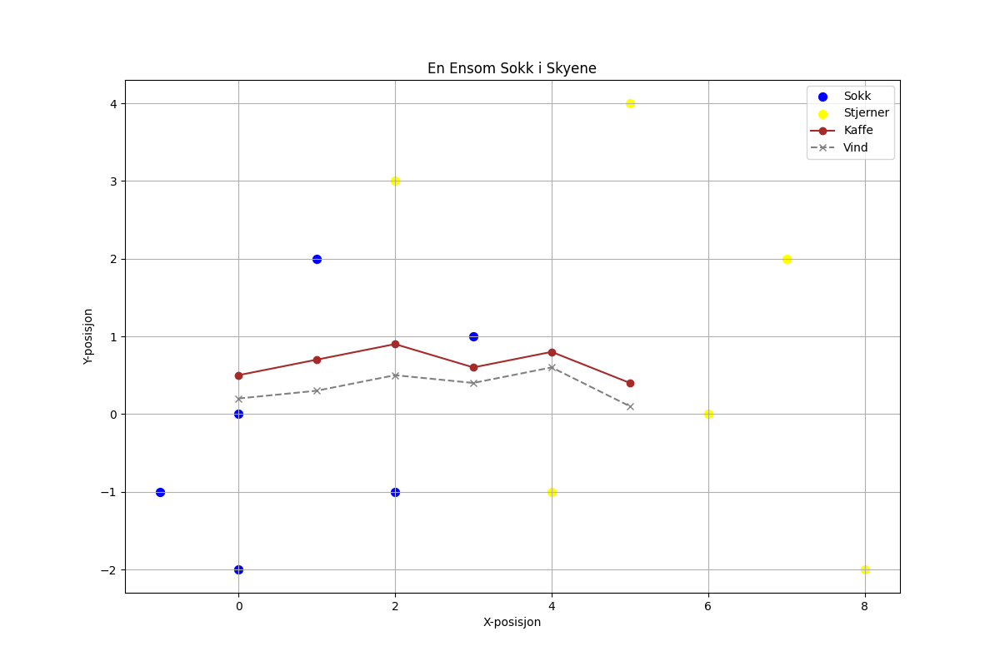

En ensom sokk i skyenes kryp, svinger som en drøm på en virvelvind. Den danser med stjerner, ler i et sukk, og smaker av morgenkaffe og vind.

import matplotlib.pyplot as plt
import numpy as np
# Data fra diktet (fiktivt)
sokke_posisjoner = np.array([[0, 0], [1, 2], [3, 1], [2, -1], [0, -2], [-1, -1]])
stjerne_posisjoner = np.array([[2, 3], [5, 4], [7, 2], [6, 0], [4, -1], [8, -2]])
kaffe_intensitet = np.array([0.5, 0.7, 0.9, 0.6, 0.8, 0.4])
vind_styrke = np.array([0.2, 0.3, 0.5, 0.4, 0.6, 0.1])
# Lag en figur og akser
fig = plt.figure(figsize=(12, 8))
ax = fig.add_subplot(111)
# Plot sokkens bevegelser som punkter
ax.scatter(sokke_posisjoner[:, 0], sokke_posisjoner[:, 1], s=50, color='blue', label='Sokk')
# Plot stjernene
ax.scatter(stjerne_posisjoner[:, 0], stjerne_posisjoner[:, 1], s=50, color='yellow', label='Stjerner')
# Plot kaffe intensitet som en linje
ax.plot(kaffe_intensitet, marker='o', linestyle='-', color='brown', label='Kaffe')
# Plot vind styrke som en linje
ax.plot(vind_styrke, marker='x', linestyle='--', color='gray', label='Vind')
# Juster layout
ax.set_xlabel('X-posisjon')
ax.set_ylabel('Y-posisjon')
ax.set_title('En Ensom Sokk i Skyene')
ax.legend()
ax.grid(True)
# Lagre figuren
plt.savefig(output_path)execution_ok=True fallback_used=False image_ok=True